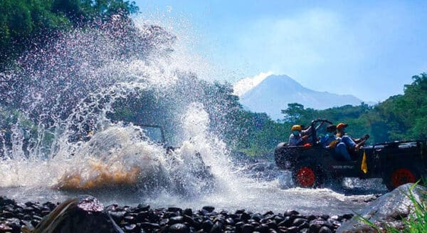

✨ Wisata Gunung Merapi ✨
Nikmati sensasi petualangan seru di puncak keindahan Yogyakarta!

Ayo jelajahi keajaiban alam Gunung Merapi!
Rasakan udara segar, pemandangan megah, dan pengalaman tak terlupakan di destinasi paling populer di Yogyakarta.
🌋 Mengapa Harus ke Gunung Merapi?
Gunung Merapi menawarkan kombinasi sempurna antara keindahan alam, wisata edukasi, dan tantangan petualangan.
Nikmati tur lava, pendakian sunrise, hingga berkeliling desa wisata di lereng Merapi bersama pemandu lokal berpengalaman.
- 🌄 Pemandangan matahari terbit terbaik di Indonesia
- 🚙 Lava Tour seru dengan mobil Jeep
- 🕠Pendakian dan camping seru di alam terbuka
- 🏞 Edukasi geologi dan sejarah letusan Merapi
🎟️ Pilih Paket Wisatamu!
| Paket | Fasilitas | Harga |
|---|---|---|
|
 Jeep Lava Tour |
Jeep, Guide, Asuransi | Rp 450.000 |
 Pendakian Sunrise |
Guide Profesional, Snack, Tiket Masuk | Rp 300.000 |
 Wisata Edukasi Merapi |
Museum, Tur Desa, Souvenir | Rp 150.000 |
🫠Pesan sekarang dan nikmati promo spesial untuk rombongan!
📠Lokasi Gunung Merapi
📍Dusun 2, Suteleng, Kec.Selo, Kabupaten Boyolali, Jawa Tengah
Gunung Merapi terletak di antara Kabupaten Sleman (DIY) dan Magelang (Jawa Tengah). Akses mudah hanya 45 menit dari pusat kota Yogyakarta.
✨ Siap Berpetualang? ✨
Ayo rencanakan liburanmu sekarang dan nikmati pesona Gunung Merapi bersama teman atau keluarga!
Lihat Galeri Wisata →